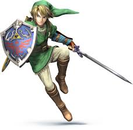
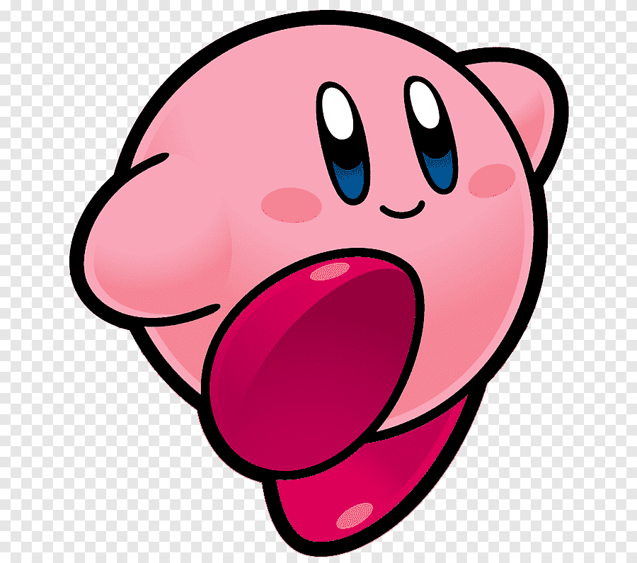
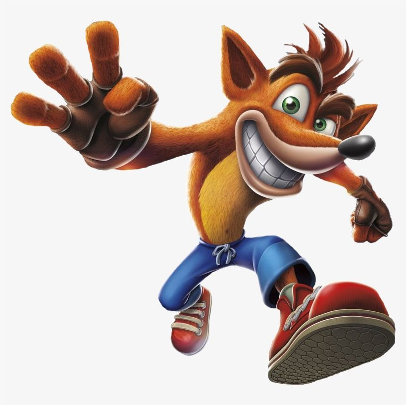
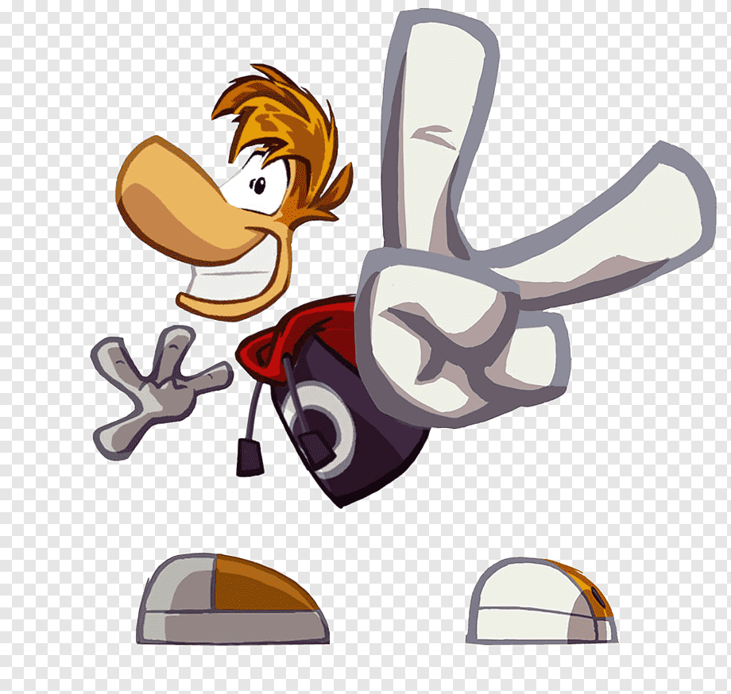
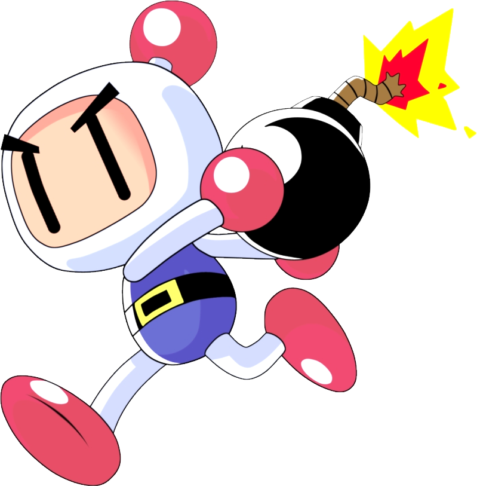
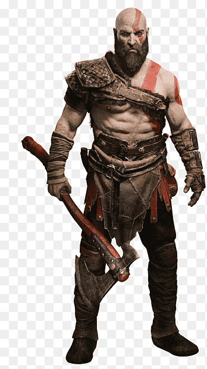
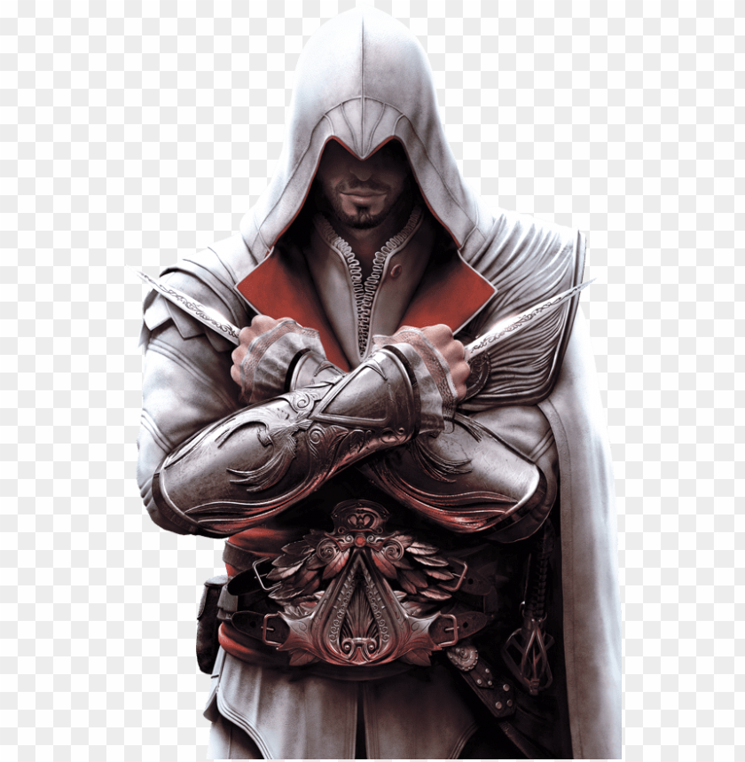
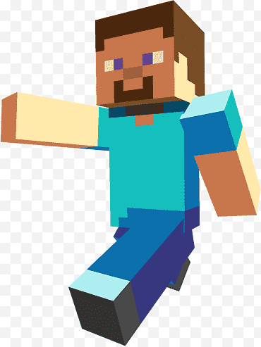
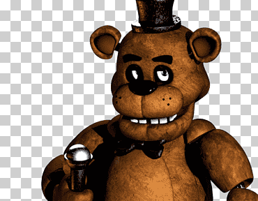
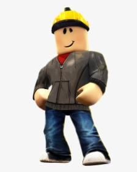

Mario Bros., o simplemente Mario, es un personaje ficticio y el protagonista de la serie de videojuegos Super Mario de Nintendo. Es un fontanero italiano que vive en el Reino Champiñón y se embarca en aventuras para rescatar a la Princesa Peach del malvado Bowser.
Sonic
Sonic the Hedgehog, o simplemente Sonic, es el protagonista de la franquicia de videojuegos homónima creada por Sega. Es la mascota oficial de la compañía y también está presente en cómics, dibujos animados, libros y películas.
Es un erizo azul antropomórfico que tiene la habilidad de moverse a altas velocidades comparables a la velocidad supersónica.
Es conocido por su personalidad rebelde e irreverente, y por su actitud despreocupada y optimista.
Es un héroe que lucha contra el malvado Doctor Eggman, un científico loco que busca dominar el mundo.
Megaman
Mega Man, conocido en Japón como Rockman, es el protagonista de la franquicia de videojuegos homónima creada por Capcom. Es uno de los personajes más reconocidos de los videojuegos, creado por Akira Kitamura en 1987 para el Nintendo Entertainment System (NES).
Mega Man es un robot con un gran sentido de la justicia y un fuerte compromiso con la protección de los inocentes.
Es conocido por su capacidad para absorber los poderes de sus enemigos y usarlos contra ellos.
A lo largo de la serie, Mega Man ha obtenido una gran variedad de armas y habilidades que le permiten enfrentar diversos desafíos.
Pacman
Pac-Man es un personaje ficticio de videojuegos creado por Toru Iwatani para la empresa Namco (actualmente Bandai Namco Entertainment). Debutó en el videojuego arcade Pac-Man el 22 de mayo de 1980. Desde entonces, se ha convertido en uno de los personajes de videojuegos más icónicos y reconocidos de la historia.
Aspecto y características:
Forma: Pac-Man es un círculo amarillo con un sector recortado que simula una boca abierta.
Personalidad: Se le caracteriza por ser un personaje alegre, juguetón y decidido.
Habilidades: Su principal habilidad es comer puntos y frutas en laberintos mientras evita ser capturado por fantasmas. También puede comer pastillas especiales que le otorgan la capacidad de perseguir y comer a los fantasmas.
Ryu
Apariencia: Ryu es un hombre musculoso de complexión atlética, con cabello oscuro y desordenado. Viste un gi blanco con un cinturón rojo y guantes rojos.
Personalidad: Ryu es un luchador serio, tranquilo y humilde, dedicado a mejorar sus habilidades y siempre buscando la superación personal.
Poderes y Habilidades:
Hadouken: Un proyectil de energía lanzado con la mano, uno de sus ataques más emblemáticos.
Shoryuken: Un golpe ascendente muy poderoso, ideal para detener ataques aéreos.
Tatsumaki Senpukyaku: Un giro rápido mientras lanza una patada circular.
Control del Ki: Ryu tiene un dominio avanzado del Ki, lo que le permite mejorar su velocidad y fuerza durante la pelea.
Desarrollo en la Saga: Ryu evoluciona de ser un luchador solitario a un maestro que enseña y ayuda a otros, con una fuerte relación con su amigo y rival, Ken.
Link

Nombre: Link
Apariencia:
Cabello rubio o castaño
Orejas puntiagudas (rasgo de los Hylianos)
Usualmente viste túnicas verdes y un gorro largo
Personalidad:
Valiente y heroico
Silencioso (no suele hablar, aunque expresa emociones)
Protector y altruista
Habilidades:
Maestro en el manejo de espadas
Experto en el uso del arco y otras armas
Capacidad para resolver acertijos y superar desafíos
Objetivo principal: Salvar Hyrule y proteger a la princesa Zelda
Enemigo recurrente: Ganon/Ganondorf
Accesorios destacados:
Espada Maestra
Escudo Hyliano
Instrumentos mágicos como la Ocarina del Tiempo
kirby

Primera aparición: Kirby's Dream Land (1992)
Color: Rosado (aunque en algunos juegos aparece blanco en arte promocional)
Habilidad principal: Inhalar enemigos y objetos
Poder especial: Copiar habilidades al tragar enemigos con poderes únicos
Personalidad: Optimista, amigable y valiente
Hábitat: Planeta Popstar, específicamente Dream Land
Enemigo recurrente: King Dedede (aunque a veces son aliados)
Otros amigos: Meta Knight, Bandana Waddle Dee
Franquicia: Más de 30 juegos, incluyendo aventuras, spin-offs y títulos crossover como Super Smash Bros.
Crash Bandicoot

Aspecto: Crash es un bandicut naranja de pie bípedo, con pantalones cortos azules y guantes. Tiene un peinado erizado y ojos expresivos que reflejan su naturaleza traviesa.
Personalidad: Alegre, enérgico y a menudo despreocupado. Crash no habla en la mayoría de los juegos, pero su lenguaje corporal y expresiones lo hacen muy carismático.
Habilidades:
Ataque giratorio: Su ataque principal, en el que gira rápidamente para derrotar enemigos o romper cajas.
Salto: Crash puede realizar saltos altos y precisos para esquivar obstáculos o derrotar enemigos.
Recolección de frutas Wumpa: Al recolectar estas frutas, Crash acumula puntos, y al reunir 100, gana una vida extra.
Invulnerabilidad temporal: Gracias a las máscaras Aku Aku, puede volverse invulnerable por un corto periodo.
Relaciones: Tiene una hermana llamada Coco Bandicoot, una aliada en muchas de sus aventuras, y una mascota polar llamada Polar.
Objetivo principal: A menudo lucha para frustrar los planes del Dr. Neo Cortex y otros villanos que amenazan su hogar o el mundo.
Rayman

Apariencia: Rayman es un ser sin extremidades visibles; su cabeza, manos y pies flotan separados de su torso. Tiene cabello rubio en forma de mechones puntiagudos y viste un suéter morado con capucha roja, pantalones amarillos y zapatillas grandes.
Personalidad: Valiente, optimista y aventurero. Siempre está dispuesto a ayudar y tiene un gran sentido del humor.
Habilidades y Poderes:
Puños flotantes: Puede lanzar golpes con sus manos a larga distancia.
Vuelo con el cabello: Utiliza su cabello como hélice para planear temporalmente en el aire.
Adaptabilidad: Aprende nuevas habilidades y poderes mágicos según la situación.
Amigos y Aliados: Globox, un compañero azul divertido, y los Teensies, pequeños seres mágicos que lo ayudan en sus aventuras.
Mundos Fantásticos: Explora escenarios llenos de magia, creatividad y elementos surrealistas.
Bomberman

Apariencia: Bomberman es un robot con un diseño simple, cuerpo blanco, extremidades rosadas o de colores, y un casco con una antena en forma de esfera.
Habilidad Principal: Puede colocar bombas para destruir obstáculos y enemigos, con explosiones radiales que también pueden dañarlo a él mismo si no tiene cuidado.
Jugabilidad Estratégica: Los juegos se centran en el uso táctico de las bombas para superar niveles, derrotar enemigos o competir contra otros jugadores.
Modo Multijugador: Es famoso por su modo multijugador, donde los jugadores compiten en arenas colocando bombas para eliminar a los oponentes.
Objetivo: Superar niveles llenos de enemigos y obstáculos, recolectando potenciadores y evitando explosiones.
Potenciadores: Incluyen mejoras en velocidad, alcance de las bombas, número de bombas simultáneas, y habilidades especiales como bombas remotas o invulnerabilidad.
Kratos

Fuerza Sobrehumana: Kratos es increíblemente fuerte, capaz de derrotar a dioses, titanes y criaturas míticas.
Habilidades en Combate: Experto en el manejo de armas como las Espadas del Caos y el Hacha Leviatán, además de su destreza en el combate cuerpo a cuerpo.
Furia Incontenible: Su "Furia Espartana" le permite desatar un poder devastador en combate.
Determinación y Resiliencia: Nunca se rinde, incluso en las situacio
Halo
Ambientación: La historia se desarrolla en un futuro distante, con colonias humanas y una guerra contra la alianza alienígena llamada el Pacto (Covenant).
Protagonista Principal:Master Chief John-117, un supersoldado mejorado, acompañado por la inteligencia artificial Cortana.
Vehículos y Armas: Vehículos icónicos como el Warthog y el Banshee, junto con una amplia gama de armas humanas y alienígenas.
Enemigos: El Covenant, los Flood (una plaga parasitaria), y los Prometheans, guardianes robóticos.
Anillos Halo: Estructuras en forma de anillo creadas por los Forerunners para destruir toda la vida en el universo si es necesario.
Multijugador: Reconocido por su modo competitivo que revolucionó el juego en línea en consolas.
Ezio

Habilidades de Combate: Ezio es un maestro en el uso de espadas, dagas y arcos, además de ser experto en combate cuerpo a cuerpo.
Carisma: Conocido por su personalidad carismática y su habilidad para liderar y ganarse la confianza de aliados.
Parkour y Sigilo: Domina el arte del parkour, lo que le permite escalar edificios y moverse rápidamente por las ciudades. También es un maestro en técnicas de sigilo.
Inteligencia Estratégica: Ezio es un estratega brillante, capaz de planificar misiones complejas para desmantelar los planes de los templarios.
Evolución Personal: A lo largo de su historia, Ezio pasa de ser un joven impulsivo que busca venganza a un líder sabio y equilibrado que busca la paz.
Steve

Apariencia: Steve tiene un diseño básico con una camiseta celeste, pantalones azules y piel de tono medio. Su cabeza y cuerpo tienen un aspecto cúbico.
Personalidad: No tiene personalidad predefinida; depende del jugador. Puede ser valiente, creativo o destructivo según el estilo de juego.
Habilidades: Puede recolectar recursos, construir estructuras, combatir enemigos y explorar el mundo del juego.
Adaptabilidad: Steve puede ser personalizado con distintos skins para cambiar su apariencia.
Rol en Minecraft: Es el personaje predeterminado controlado por los jugadores en todos los modos de juego.
Freddy

Apariencia: Freddy es un oso animatrónico marrón con ojos brillantes que se vuelven intimidantes en la oscuridad. Lleva un sombrero de copa negro, un moño y tiene un micrófono que utiliza para "cantar".
Personalidad: Como líder de los animatrónicos, Freddy es calculador, silencioso y uno de los enemigos más peligrosos de los juegos. Su comportamiento es sigiloso, lo que lo hace difícil de detectar hasta que es demasiado tarde.
Habilidades: Freddy se mueve en las sombras y utiliza su risa escalofriante como un indicador de su proximidad. En muchos juegos, aparece como el jefe o enemigo final más desafiante.
Versiones: Freddy tiene diferentes versiones a lo largo de la serie, como Golden Freddy, Shadow Freddy, Toy Freddy, y Glamrock Freddy en FNaF: Security Breach. Cada una tiene sus propias características únicas.
Roblox (Buldierman)

Nombre Real: David Baszucki
Rango: Fundador y CEO de Roblox
Avatar: Utilizado como avatar icónico para la bienvenida de nuevos jugadores
Actividad: Actualmente rara vez activo en la plataforma
Características: Figura central en la historia y desarrollo de Roblox

.jpeg)

.jpg)